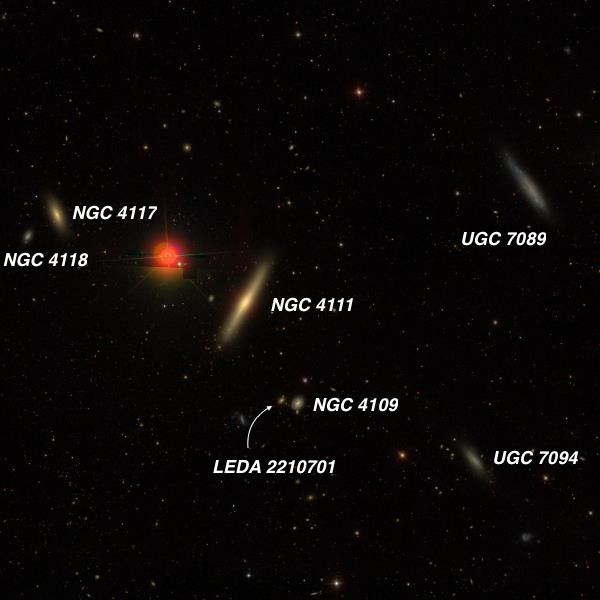
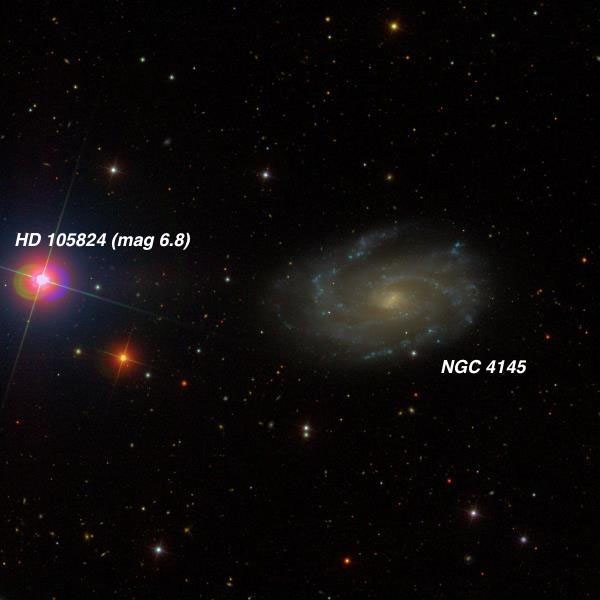
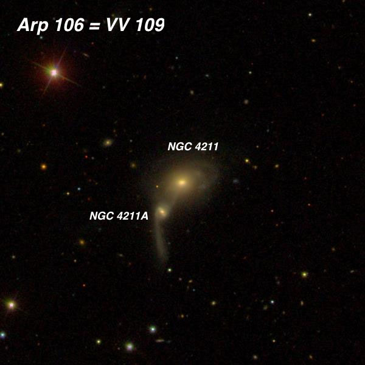
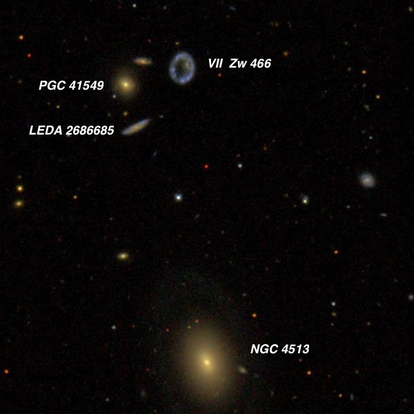
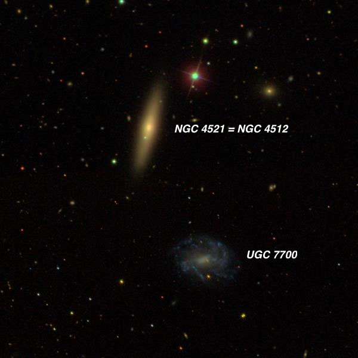
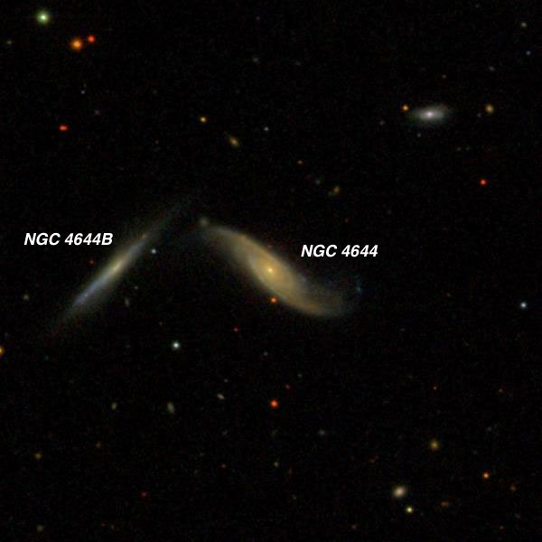
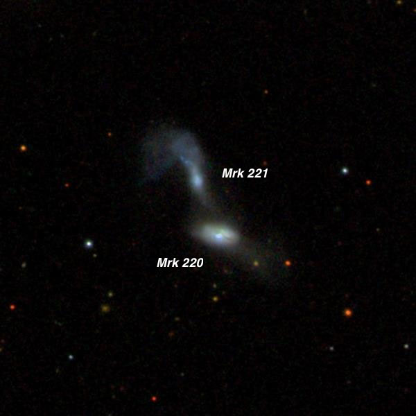
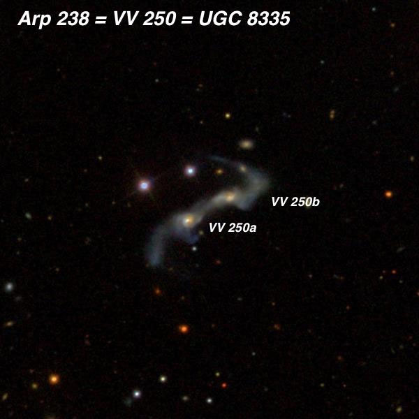
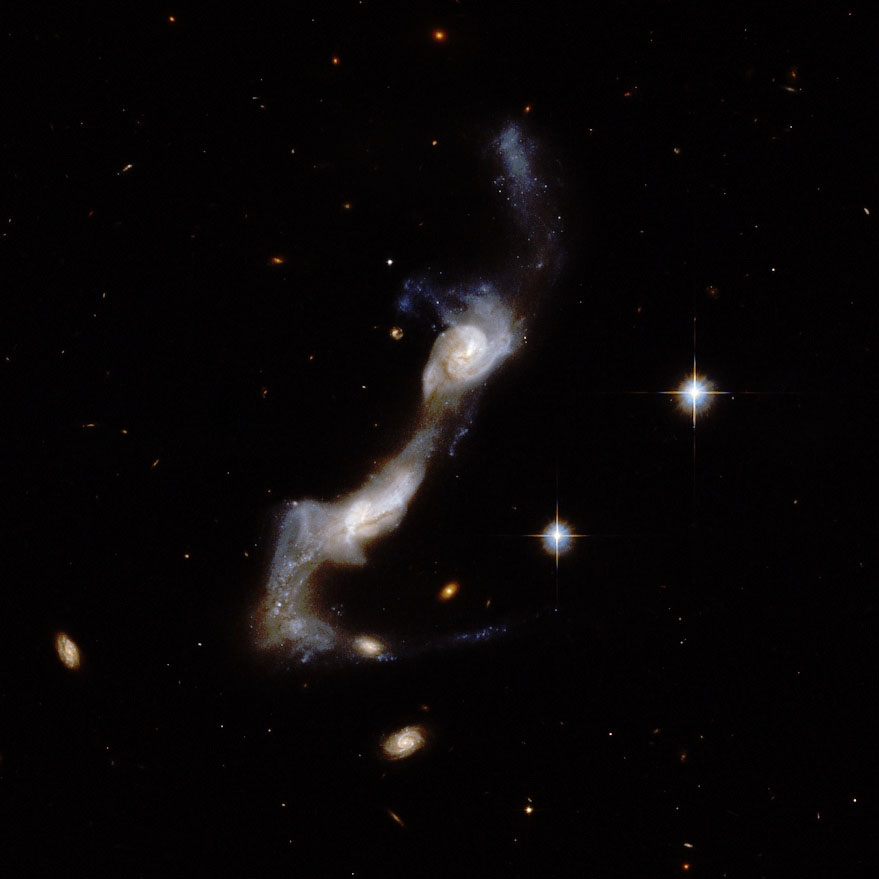
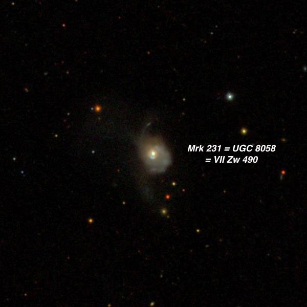

Saying farewell to spring galaxies.
OR: Saying Farewell to Spring Galaxies 5/31/16 by Steve Gottlieb
With a promising weather forecast on Memorial day (Monday nights), I met up with Bob Douglas, Carter Scholz and Dennis Beckley at Lake Sonoma’s Lone Rock parking lot. I wasn’t sure what to expect with traffic on the drive up 101 through Santa Rosa because of possible holiday weekend traffic, but the freeway was oddly empty – possibly everyone was home watching either the first game of the Sharks or Warriors finals!
Astronomical twilight doesn’t end until 10:15 now, but moonrise wasn’t until nearly 3:00 AM, allowing plenty of time for dark sky observing. Temps were very comfortable (in the low 60’s) and there was no issues with dew/humidity but the seeing was somewhat soft, limiting magnification to 375x at best. The transparency can be a mixed bag at Lake Sonoma, the Santa Rosa/Petaluma corridor can throw up a significant light dome along the southern horizon (particularly before midnight), but it can be quite dark in the west and north. In fact, Carter and I were consistently getting SQM readings of 21.47-21.51 overhead, which is surprisingly good for a site only 30 miles north of Santa Rosa.
Bob had made preparations to observe Mars, along with Deimos and Phobos, just a week after opposition. Using his high-end 28-inch f/3.7 Starstructure at 700x, 12th magnitude Deimos was very easy to identify using an eyepiece fitted with an occulting bar. A few hours later we confirmed the satellite again, and verified it had moved along its orbit in the right direction and amount. Bob didn’t made an attempt at observing tougher Phobos, but will try this weekend in hopefully better seeing.
I stuck with observing galaxies, particularly in the northwest where the skies were in the 21.5 range. I took a look at one galaxy group ( NGC 4111 ) with several edge-on lenticular and spirals) but mostly focused on interacting, disrupted pairs and oddball galaxies, such as Markarian 231. Here’s a sampler of the evening treats.
—Steve Gottlieb

The first field I observed was the NGC 4111 group, dominated by you guessed it – NGC 4111. This beautiful edge-on is elongated ~7:1 NNW-SSE and extends 3.5'x0.5'. It is sharply concentrated with a small very bright, elongated core and an unusually bright quasi-stellar nucleus. An extremely faint star or stellar knot was suspected near the southeast end. A very wide unequal pair (HJ 2596) with an orange mag 8.1 primary lies 3.7' NE.
NGC 4111 is the brightest in a group containing NGC 4109 4.8' SSW, NGC 4117 8.6' NE, NGC 4118 9.4' NE, UGC 7094 11.6' SW and UGC 7089 12.8' NW. All these galaxies with the exception of UGC 7089 are roughly aligned in a 20' string oriented SW-NE.
UGC 7094 appeared very faint, very elongated 4:1 SW-NE, 1.0'x0.25', very low surface brightness with no noticeable concentration. The major axis of UGC 7094 points directly to NGC 4111 and their major axes are perpendicular. NGC 4109 was fairly faint, fairly small, roundish, 20" diameter, broad weak concentration. It forms a close pair with LEDA 2210701 just 40" to the east. The companion was extremely faint and small, ~6" diameter. Once acquired, I could hold it nearly 50% of the time despite a V magnitude of ~16.0. A redshift of z = .086 implies a light-travel time of 1.1 billion years! NGC 4117 was moderately bright, fairly small, very elongated 3:1 SSW-NNE, 0.9'x0.3', well concentrated with a small bright elongated core with faint extensions. NGC 4118 appeared very faint, very small, slightly elongated NW-SE, ~14"x10".

NGC 4145 is fairly bright, very large, roughly oval 4:3 ~E-W, 4'x3', contains a large brighter core and a noticeably patchy or irregular halo with a strong impression of spiral structure. Two arms were fairly confident; one extending east of the core on its south side and another extending west of the core on its north side. Otherwise, it seemed like slightly brighter HII patches in the low surface brightness halo were just resolving in the outer halo. This galaxy is located 9' due west of mag 6.8 HD 105824 .
NGC 4145A = UGC 7175 lies 12' SE. It appeared faint to fairly faint, fairly small as often only the 20" slightly elongated core was visible. Sometimes very low surface brightness extensions E-W were seen, increasing the size to ~35"x20", but the full extension of the arms were not detected.

NGC 4211 is an interacting system ( Arp 106 ) oriented NW-SE (separation 35"), with the brighter component ( VV 196a ) on the northwest side. At 225x it appeared fairly faint to moderately bright, round, 24" diameter, increases rapidly to a very small brighter core and stellar nucleus. The fainter southeast component ( NGC 4211A = VV 196b) is faint, small, slightly elongated N-S, 15"x10", slightly concentration at the center. The tidal tail to the south was not seen. NGC 4211 is situated 9' NW of mag 8.2 HD 106678 .
UGC 7287 lies 8' SE. It appeared faint, fairly small, slightly elongated E-W, 24"x18", low even surface brightness.

NGC 4513 faint, fairly small, elongated 3:2 SSW-NNE, 0.6'x0.4', small bright core. My real reason for looking at this field, though, is the interesting group of faint galaxies just to the north!
The triple system VII Zw 467 = CGCG 315-044 (2 members seen) is 4' NNE and VII Zw 466 = CGCG 315-043 (empty collisional RING galaxy) is 4' N. PGC 41549 appeared faint, very small, round, 12" diameter, visible continuously with averted vision. Both PGC 2686685 and VII Zw 466 were challenging objects, only occasionally visible.
I observed VII Zw 466 three years in Jimi Lowrey's 48" at 488x and the ring structure was resolved! VII Zw 466 appeared fairly faint, small, round with a slightly brighter rim and darker center. The ring was irregular lit and brighter on the west side with a couple of slightly brighter knots north and south.
PGC 3441759 , the faintest member of triple system VII Zw 467, appeared very faint, extremely small, round, 6" diameter. PGC 41549, the brightest component, is fairly faint, small, round, high surface brightness and PGC 2686685 is faint, small, elongated 2:1 NW-SE, 20"x10".
VII Zw 466 is probably the best "smoke ring" galaxy. The most likely candidate for the collision that created the ring is the peculiar spheroidal galaxy seen directly to the east of the ring.

NGC 4521 appeared bright and large, edge-on 4:1 NNW-SSE, 1.2'x0.3', sharply concentrated with a very small bright core. A mag 11 star is 2' NNW and a mag 15.2 star is 1.4' SSE. This galaxy is the brightest in a group including NGC 4510 19' NNW and NGC 4545 27' SSE. It forms a pair with much fainter UGC 7700 4' SSW.
UGC 7700 is misidentified in all modern catalogues and most online sources as NGC 4512 . It was very faint, fairly small, 24" diameter (only the central region seen). The surface brightness was very low and smooth.

Fairly faint, moderately large, very elongated 3:1 SW-NE, 0.9'x0.3'. Contains a bright elongated core. NGC 4644 is the northernmost in a group of galaxies (LGG 300) including NGC 4669, 4675, 4686, 4695 and UGC 7905 (double).
NGC 4644 is the western component of a close pair with much fainter NGC 4644B = MCG +09-21-032 1.4' E. The companion appeared very faint, very elongated 3:1 NW-SE, 30"x10". Despite a low surface brightness, it was easier than I expected based on the SDSS magnitudes (V ~15.0).

UGC 7905 = VV 708 is a disturbed, interacting system with tidal tails extending from both galaxies. The pair is oriented SSW to NNE with centers separated by 35". At 225x, the southwest member ( Mrk 220 ) appeared fairly faint, small, high surface brightness, roundish, 18" diameter. The northeast component ( Mrk 221 ) appeared faint, fairly small, 18", low surface brightness. Only the central region was seen and I missed the tidal tail extending to the north and east. Located 8.5' WNW of NGC 4669 and a similar distance ENE of NGC 4646!
J.L.E. Dreyer observed the region of NGC 4644 and 4646 using Lord Rosse's 72" on 25 Apr 1878. After logging NGC 4644, he moved 20' south and described NGC 4646 . Finally he reported "A third nebula, bi-nuclear in Pos. 16.5°, Dist 44", south-preceding nucleus much the brighter, other one fainter and smaller, perhaps composed of st. This nebula is in Pos 71.5°, Dist 533" from [NGC 4646]." At this separation from NGC 4646 is the double galaxy UGC 7905, which fits Dreyer's description. He assumed this nebula was NGC 4669, so UGC 7905 did not receive a NGC designation.

UGC 8335 = Arp 238 = VV 250 13 15 32.8 +62 07 36 Size 1.7'x0.7'; PA = 120d
This is a highly disrupted double system with a bridge and streamers. A spectacular HST image is at http://www.spacetelescope.org/static/archives/assets/large/heic0810al.jpg
At 322x both components of Arp 238 were seen immediately. MCG +10-19-056 , the northwest component, is faint, small, elongated 4:3 ~E-W, 16"x12". The brighter southeast component is fairly faint, small, elongated 4:3 or 5:4, 20"x15". There was a small gap between the pair
This is a highly disrupted double system with a bridge and streamers though neither tidal tails was seen. A mag 14 star is 35" NE of MCG +10-19-056 and a slightly brighter mag 13.5 star is 40" NE of MCG +10-19-057 with the separation and orientation of the stars very similar to the cores of the galaxies! CGCG 294-027 lies 11' NW.
Here’s the HST image of the spectacular merging pair:


Mrk 231 = UGC 8058 12 56 14.2 +56 52 25 V = 13.6; Size 1.3'x1.0'; Surf Br = 13.7; PA = 10d
Using 322x this remarkable object contained a bright quasi-stellar nucleus (mag ~13.5) surrounded by a small, very low surface brightness halo. The appearance was very unusual as there was no core - just a bright nucleus that required a close look to verify it was slightly non-stellar (perhaps 3"-4" diameter). It was surrounded by a small, dim halo.
So what's so special about this small galaxy? Astronomers using NASA’s Hubble Space Telescope found that Markarian 231 is the nearest galaxy to Earth that hosts a quasar and is powered by two central black holes furiously whirling about each other! Despite being relatively bright, it resides at a distance of ~600 million light-years.
The black holes should have an insatiable appetite. However, observations with the Gemini Observatory reveal an extreme, large-scale outflow that brings the cosmic dinner to a halt. The outflow is effectively blowing the galaxy apart in a negative feedback loop, depriving the galaxy's monstrous black hole of the gas and dust it needs to sustain its frenetic growth. It also limits the material available for the galaxy to make new generations of stars.
Markarian 231 is located about 600 million light-years away. Although its mass is uncertain, some estimates indicate that Mrk 231 has a mass about 3 times that of our Milky Way and its central black hole is estimated to have a mass of at least 10 million solar masses or about 3 times that of the supermassive black hole in the Milky Way.